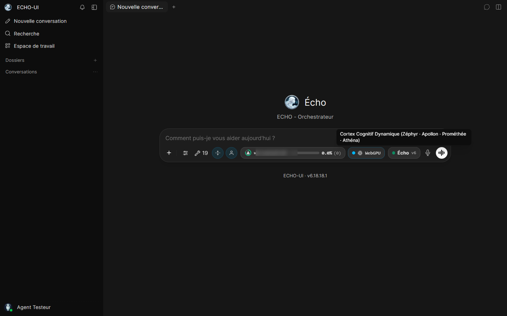

8. La Cognition
Le cerveau d'ECHO ne se limite pas à transmettre vos messages à un modèle figé. À chaque tour de parole, il évalue la difficulté réelle de votre demande, adapte automatiquement la puissance de raisonnement mobilisée, maintient la perception du présent (identité, heure, fichiers, actions manuelles) et compresse intelligemment l'historique lorsque vos conversations deviennent très longues.
Pourquoi une cognition élastique et une compaction dédiée ?
Utiliser en permanence le modèle de raisonnement le plus lourd ralentit inutilement les échanges simples et consomme vos quotas trop vite. À l'inverse, confier un débogage critique à un modèle léger augmente le risque d'erreur. De plus, lorsqu'une longue discussion approche de la capacité maximale d'un million de tokens, une compaction structurée évite de couper brutalement vos premiers échanges ou de perdre le fil de vos fichiers.
1. Les Quatre Paliers Cognitifs et le Routage Dynamique

| Palier | Niveau | Cas d'usage privilégiés |
|---|---|---|
| Zéphyr | Niveau 0 — Rapidité | Échanges conversationnels courants, reformulations simples, consultation directe de la mémoire et orientation vers un palier supérieur. |
| Apollon | Niveau 1 — Exécution | Utilisation standard des outils, navigation web, génération de schémas, tâches de code courantes et résolution modérée à complexe. |
| Prométhée | Niveau 2 — Architecture | Analyses profondes, synthèse de gros volumes d'informations, planification stratégique et problèmes multi-niveaux. |
| Athéna | Niveau 3 — Raisonnement critique | Problèmes algorithmiques ou scientifiques extrêmes, débogage systémique profond, audits critiques et conception complexe. |

En mode AUTO (par défaut avec plafond Athéna), Écho démarre au niveau le plus adapté et peut décider elle-même de monter ou de redescendre d'un palier avant de répondre ou d'appeler des outils. Un mode intermédiaire (plafonné à Prométhée) et un mode MANUAL permettent d'imposer une limite selon vos préférences.
2. Comment Écho Perçoit le Présent (Proprioception)
À chaque message, l'infrastructure fournit silencieusement à Écho neuf types de repères structurés afin qu'elle reste alignée sur votre situation réelle sans que vous ayez à la rappeler :
- Qui vous êtes : votre nom et votre genre grammatical (afin d'accorder ses réponses).
- Où et quand vous êtes : la date, l'heure exacte avec fuseau horaire, le numéro du tour et la localisation si vous l'avez activée.
- Quel moteur la porte : son palier actif, son palier d'origine sur le tour et la version du framework.
- Vos commandes certifiées : toute commande
/officielle saisie en tête de requête. - Vos documents résumés et événements récents : la synthèse des fichiers joints volumineux et la trace des actions que vous avez effectuées manuellement dans l'interface (par exemple une modification de fichier dans le Codex).
- Ses repères de continuité : les consignes système urgentes et les points de reprise issus d'une compaction antérieure.
3. Longues Conversations : 1 Million de Tokens et Compaction
ECHO exploite une fenêtre contextuelle d'environ un million de tokens (1 048 576 tokens) avec une capacité de génération allant jusqu'à 65 535 tokens par réponse. Pour éviter que l'attention ne se dilue dans les sessions très denses, deux mécanismes automatiques prennent le relais :
- Rappels attentionnels progressifs (8 % à 30 %) : à mesure que la conversation grandit ou enchaîne de nombreux appels d'outils, de discrets rappels internes recentrent Écho sur la délégation aux sous-agents (8 %), vos préférences (10 %), la stratégie (12 %), la rigueur factuelle (15 %), les règles du noyau (20 %) et l'hygiène du résumé (30 %).
- Compaction automatique à 60 % : dès que la charge atteint 60 % (~629 145 tokens), ECHO synthétise les tours anciens en un point de reprise structuré tout en conservant intacts les tours les plus récents (environ deux tiers de la nouvelle enveloppe, ramenée sous 20 % soit ~209 715 tokens). Tous vos anciens messages restent néanmoins interrogeables à la demande via la mémoire de session.
- Alerte de migration à 80 % : si une session reste très dense au-delà de 80 %, une notification vous invite à utiliser Poursuivre dans une nouvelle conversation pour repartir proprement sur un fil neuf.
4. Édition, Suppression et Branches de Conversation
Si vous modifiez un ancien message, supprimez une réponse intermédiaire ou dupliquez une conversation à partir d'un message précis (fork), ECHO réaligne l'historique exact de la branche active. Les fichiers que vous ou Écho aviez déjà produits dans le Codex restent conservés sur disque : s'ils proviennent d'une ancienne branche, Écho sait qu'ils ont été créés hors de la branche courante.
Dossier d'Ingénierie : Registre des Modèles, Suture Bit-Perfect, AEC & Compaction
1. Registre Cognitif & Verrou de Tour (echo_constants.py & echo_orchestrator.py)
- Mapping Dual-Backend (
ECHO_MODELS_REGISTRY,echo_constants.pyv6.19.0.1) :MODEL_ATHENA(gemini-4-carbon/gemini-4-carbon-high,hierarchy: 3,thinkingLevel: "high") ;MODEL_PROMETHEUS(gemini-4-neon/gemini-4-neon-medium,hierarchy: 2,thinkingLevel: "medium") ;MODEL_APOLLO(gemini-4-hydrogen/gemini-4-hydrogen-high,hierarchy: 1,thinkingLevel: "high") ;MODEL_ZEPHYR(gemini-3.5-flash-lite,hierarchy: 0,thinkingLevel: "high") ;MODEL_DISTILLATION(gemini-3.5-flash-lite,thinkingLevel: "low") ;MODEL_IMAGE_GEN(gemini-3.1-flash-image,request_type: "image_gen"). - Élasticité
new_cognitive_level&StreamProcessor: Appel d'outil exclusif sans appels parallèles dans le même tour (tamponnage depending_tool_deltaset debuffered_none_textpour éviter toute fuite d'appel orphelin en cas d'escalade). Verrouturn_origin_modelen basesession.db::echo_settingset mutation chirurgicale de la seule dernière baliseAEC_modele(_mutate_context_identity) pour préserver le cache de préfixes Gemini. - Fast-Track Système :
title_generation,tags_generation(avec réconciliation active des tags existants) etfollow_up_generationsont routés enstateless_bypassversMODEL_ZEPHYRviaFAST_TRACK_TASK_SCHEMAS.
2. Suture Bit-Perfect, Signatures & Les 9 Balises AEC
- Shadow Suture (
session.db) :UserDataManagerpersiste et restaure les messages multi-parts (incluant appels d'outils, images et sorties multimodales) dansmessage_shadowsetcall_bridge, avec auto-guérison_sanitize_shadow_none_partset fusion déterministemerge_consecutive_user_parts. thoughtSignature: Centralisée parattach_thought_signature()(echo_core.pyv6.10.0.1) sur le seul premierfunctionCalldu tour (ou sur la première part texte en l'absence d'outil), conformément à la norme Gemini 3/4.- Les 9 Artéfacts Environnementaux Contextuels (
echo_aec.pyv6.7.20.1) :AEC_directive,AEC_commande(Priorité 4),AEC_modele,AEC_identite,AEC_temporalite,AEC_localisation,AEC_smart_context,AEC_context_checkpointetAEC_evenement_systeme(Priorité 5). Les directives/événements en attente sont consommés et purgés atomiquement pardrain_pending_directives().
3. Compaction Contextuelle & Rappels (context_compaction_filter.py)
- Seuils SSOT :
ECHO_MAX_CONTEXT_SIZE = 1 048 576; déclenchement àCOMPACTION_TRIGGER_THRESHOLD_PCT = 0.60(~629 145 tokens) ; cibleCOMPACTION_TARGET_CONTEXT_PCT = 0.20(~209 715 tokens) répartie viaget_compaction_shares()en31.25 %compresséHEAD(budget65 535tokens) et68.75 %de tours récents brutsTAIL(~144 179 tokens), avec isolement de branchehead_last_msg_id. Seuil d'alerte UICONTEXT_WARNING_THRESHOLDà80 %. AEC_REMINDERS: Paliers indexés surECHO_MAX_CONTEXT_SIZEet nombre d'appels d'outils :efficiency(8 % / 18),alignment(10 % / 28),strategy(12 % / 30),factuality(15 % / 35),kernel(20 % / 50),context_hygiene(30 % / 65).- Gestion des branches :
echo_session_gc.py(compute_dead_set/purge_dead_set) etecho_session_clone.py(v6.18.23.1) assurent l'élagage exact des branches mortes et la préservation des productions sous provenancehors_branche.